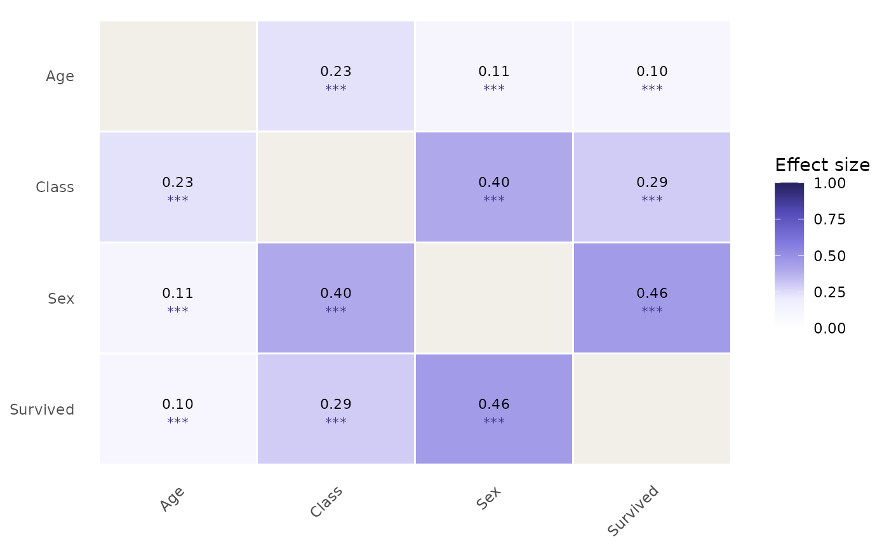
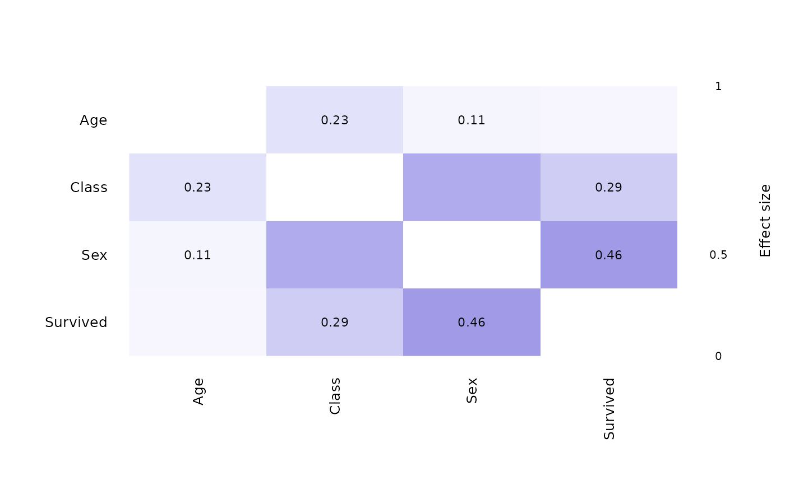

Produces a colour-coded heatmap of the dense all-pairs effect-size matrix
implied by a catgraph object. Heatmap fill values are computed from
the processed data stored in x$data via assoc_similarity,
so true zero associations are shown as 0 rather than treated as absent
graph edges.
Arguments
- x
A
catgraphobject.- engine
Character.
"ggplot2"(default) or"base". Theggplot2engine requires ggplot2; thebaseengine uses only graphics from base R.- show_values
Logical. Whether to print effect-size values inside each cell. Default
TRUE.- show_sig
Logical. Whether to overlay significance stars (
***p < 0.001,**p < 0.01,*p < 0.05,.p < 0.1) below each value. DefaultFALSE.- show_ci
Logical. Whether to show bootstrapped confidence intervals as
[lo, hi]text beneath each value. Requires thatcatgraph_cihas been called onx. DefaultFALSE.- palette
Character vector of colours defining the gradient from low (weak association) to high (strong association). Default is a perceptually uniform purple ramp derived from the package colour system. Pass any vector of hex colours to override.
- digits
Integer. Number of decimal places for cell labels. Default
2L.- title
Character. Plot title. Default
NULL.- na_fill
Character. Fill colour for cells that could not be computed (e.g. degenerate pairs). Default
"#D3D1C7"(gray-100).- reorder
Logical. Whether to reorder variables by hierarchical clustering of the effect-size matrix so that similar variables are adjacent. Default
TRUE.
Value
For engine = "ggplot2": a ggplot object (can be
further customised with ggplot2 layers).
For engine = "base": NULL, invisibly, called for its
side effect.
Details
Colour palette: the default palette is a five-stop sequence
from white (V = 0) through lilac to deep purple (V = 1), matching the
purple ramp used throughout the package. This choice avoids the
red/green palette that is problematic for colour-blind readers. Pass
palette = c("#FFFFFF", "#5DCAA5", "#0F6E56") for a teal ramp, for
example.
Reordering: when reorder = TRUE, the variables are
permuted by the first two components of an angular-order seriation of the
correlation matrix, following the corrplot convention (Wei &
Simko, 2021). Because effect sizes are always non-negative, the
clustering uses \(1 - V\) as a dissimilarity measure, which groups
strongly associated variables together.
References
Wei, T., & Simko, V. (2021). R package corrplot: Visualization of a Correlation Matrix. Version 0.92. https://github.com/taiyun/corrplot
Examples
df <- as.data.frame(Titanic)
df_exp <- df[rep(seq_len(nrow(df)), df$Freq), -5]
cg <- catgraph(df_exp)
plot_heatmap(cg)
plot_heatmap(cg, show_sig = TRUE)

plot_heatmap(cg, engine = "base")
